Микротуториал по технической анимации для самых маленьких.
Об экспорте анимации.
Перед нами невероятный и интересный мир компьютерной анимации в программе Spine. Здесь мы кратко рассмотрим, что делать, если аниматор передал файлы проекта, ушёл спать, а объяснить, что с ними делать, не потрудился.
Запускаем проект, и видим такое: 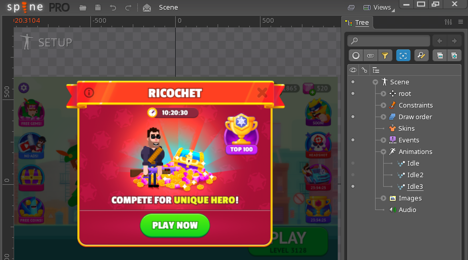 Если нажать на Setup, слева сверху, то можно просмотреть анимации, которые собраны в проекте, список их по умолчанию можно найти в дереве проекта cправа, но углубляться не будем, мы здесь за другим — жмём слева сверху на надпись-логотип spine, затем на export: 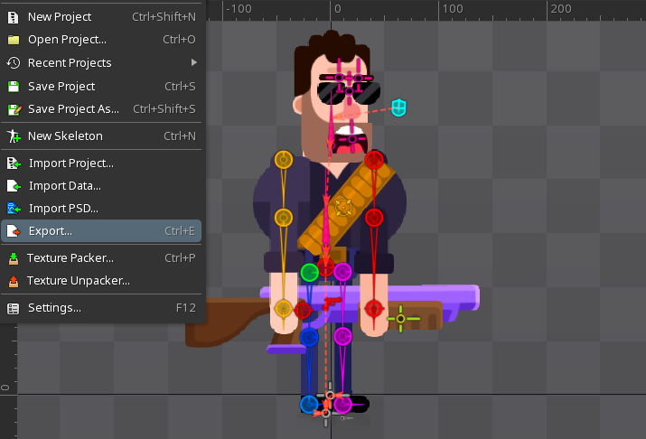
Нам открывается интересное окно со списком всех возможных вариантов экспорта. Наш выбор - JSON. Значительно реже мы можем выбрать Binary, принципы настроек примерно одинаковы. В окне Json мы можем выбрать путь сохранения экспорта, версию экспорта (в последних версиях спайна стала доступна такая функция), и внизу галочку Open after export. Сейчас мы должны нажать на кнопку Pack Settings: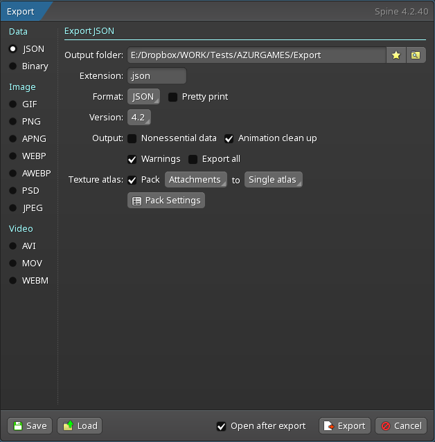
Удивительной красоты меню открылось перед нами. Страшная и непонятная настройка упаковки атласов. В ней много опций, но мы пройдёмся по основным, тем, которые могут быть нам полезны и интересны в зависимости от задачи. Их я насчитал целых восемь: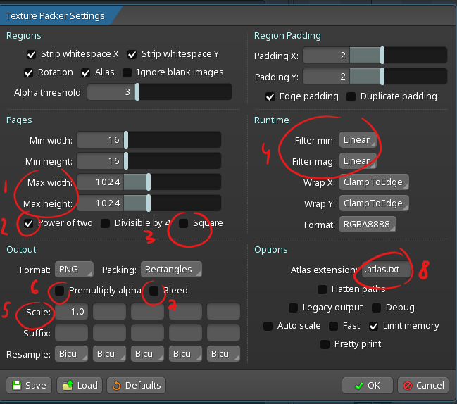
MaxWidth/MaxHeight — мы задаём максимальные размеры атласа, атлас нужно стараться делать не больше 4096x4096, а ещё лучше, не превышать 2048х2048.
Power of two — по умолчанию нужно включать всегда, и по хорошему, вообще не трогать её. Отвечает за то, чтобы атласы были с размерами сторон кратны двойке в какой-то степени (16, 32, 64, 128, 256, 512, etc).
Square — делает атлас квадратным. Иногда для экономии места, в целях агрессивной оптимизации проекта, можно отключить, и атласы на выходе будут получаться прямоугольными, иногда с непредсказуемыми размерами, вроде 1024x64. Атласы можно пробовать оставлять такими, когда используются длинные вытянутые детали в анимации.
Filter min/Filter mag — эта настройка редко изменяется, но если в проекте на динамических анимациях, особенно при скейлах всего скелета или частей тела, появляются шакальные пиксели или артефакты спрайтов, то можно проверить, не стоит ли nearest, и переключить её на Linear.
Scale — если спрайты у нас соответствуют HD графике, а на выходе персонаж должен быть размера в 4 меньше, то мы можем выставить scale 0.25, тогда все спрайты запакуются в атлас в этом скейле. В таком случае, неплохо было бы главную кость под рутом в проекте поскейлить тоже, но это зависит от того, как организован проект и есть ли такая кость. Root трогать нельзя.
Premultiply alpha — если у нас есть объекты с альфой/полупрозрачностью, без этой галочки они будут некорректно отображаться в проекте.
Bleed — некоторые спрайты без этой галочки могут на границах-пересечениях иметь артефакты ввиде затемнённых краёв, если такое случается, прожимаем галочку
Atlas extension — при работе в юнити и некоторых других движках следует прописать .txt в конце расширения, если её нет. Это избавит от ошибки импорта в юнити, и лишней мороки и гаданий.
C настройками разобрались, жмём ок в окне пакера, и export в окне Json, и переходим к следующему пункту.
О том, что делать после экспорта
Если ты пропустил первый раздел, посвящённый экспорту, и впервые сталкиваешься с тем, чтобы вставить анимацию из Spine в проект, не знаешь, что делать, то ты в нужном месте и на верном пути.
Для начала нам нужно узнать, какую версию спайна используют в анимации. Аниматор прислал zip архив с экспортом. Распакуем его в отдельную папку. Внутри него лежит три файла: 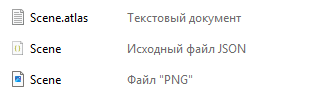
Первый файл Scene.atlas.txt — это файл в котором лежит информация о том, какие спрайты на каких координатах запакованы в атлас анимации.
Второй файл Scene.json — это файл с информацией об анимации, здесь хранится буквально вся информация об анимации проекта.
Третий файл Scene.png — это файл с запечёнными в один атлас спрайтами.
Есть два варианта узнать версию спайна: спросить напрямую или посмотреть в этих трёх файлах. Аниматор наанимировался и спит, заглянем в файл Scene.Json: открываем его в каком-нибудь редакторе кода или текста. В самом начале видим строчку: 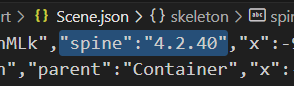
Это то, что нам нужно. Наша версия спайна: 4.2
Тернистый путь завёл нас на сайт великих и прекрасных разработчиков спайна Esoteric Software в раздел рантаймов (рантайм это такой набор классов, инструкций, методов и прочих программистких терминов, которые помогают одной программе использовать результаты деятельности другой программы). Находим и качаем нужный рантайм под наш движок юнити. Прямая ссылка на пэкэдж версии 4.2 (для очень ленивых).
Пока скачивается пэкэдж, запускаем юнити и идём пить чай.
Об импорте анимации.
Юнити открыт, пэкэдж скачан, архив от аниматора распакован. Займёмся доготовкой юнити и установкой пэкэджа.
Нам безумно повезло, и при открытой юнити нужно два раза кликнуть по пэкэджу, и юнити спросит: 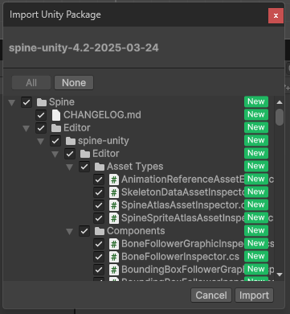
Cмело жмём import. Уже в недалёком будущем, когда мы будем крутыми импортёрами спайн-анимаций в юнити-проекты, мы сделаем ход конём и будем убирать некоторые галочки с ненужных туториалов и примеров в рантайме. Но это будет потом.
Остаётся дело за малым. Создаём папку для будущих имортов (у меня это Animation/Characters). 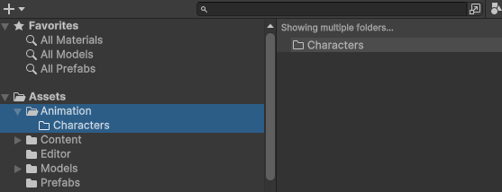 Перетаскиваем файлы экспорта (json, atlas.txt, png) в папку. Логично было бы создать папку Ricochet (для каждого персонажа из спайна лучше создавать свою папку, в рамках общего порядка) или Scene (по названию файлов), но мы пойдём коротким путём, и закинем её в Characters. Юнити, при установленном рантайме автоматически создаст несколько новых файлов (было три, стало шесть, магия, не иначе): 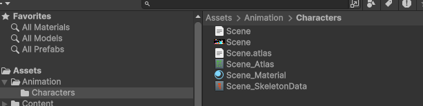 Если по какой-то причине, файлы не создались, или появилась ошибка, проверь, не забыл ли аниматор дописать расширение .txt к файлу .atlas. Это распространнённая ошибка на начальных порах, об этом упоминалось в первом пункте об экспорте из спайна.
Нам стал доступен доступен файл с постфиксом _SkeletonData. Перетащим его на рабочую поверхность юнити, и выберем один из трёх вариантов (для теста возьмём верхний): 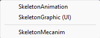
Да, в целях небольшого разъяснения. Animation берём, если хотим использовать аниматор кодом, который идёт вместе с рантаймом, Graphic(UI) — если вставляем в канвас, а Mecanim — если будем прикручивать анимации в родной аниматор от юнити, дав возможность аниматору наделать страшных делов с нодами стейтов.
После того, как перетащили сцену на рабочую поверхность, нас может ждать сюрприз. В данном случае лучи с альфой стали белыми: 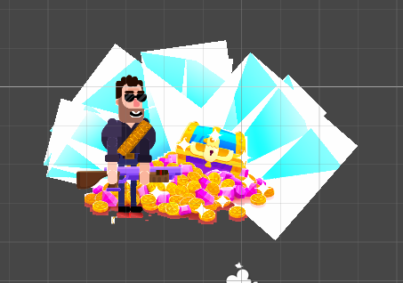Это одна из распространённых ошибок экспорта-импорта, прямая отсылка к настройкам экспорту, пункту 6, внимательный читатель вспомнит, что речь идёт о настройке Premultiply Alpha. При экспорте не прожали галочку с этой настройкой, и у нас есть два пути. Или сделать реэкспорт, если доступны файлы проекта, или среди файлов импорта материал с постфиксом _Material, и прожать в инспекторе Straigh Alpha TextureЖ 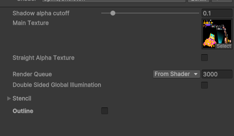 что подарит нам вот такой вариант изображения: 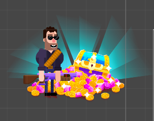 но лучше, конечно, сделать реэкспорт.
В заключении хочу добавить, что анимации можно посмотреть в том же инспекторе, но только у файла _SkeletonData. Там же можно посмотреть скины, сгенерировать аниматор для меканима, настроить блендмоды, но об этом всём как-нибудь в другой раз.